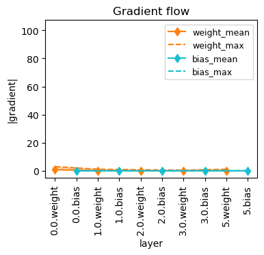
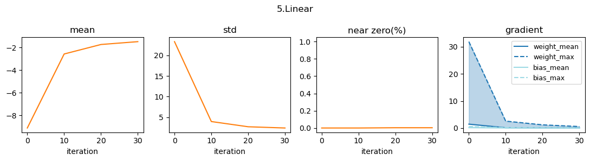

from wafer.init import *Progress and logging
Callbacks to track progress of training or log results.
For demo, consider the image classification task on the MNIST dataset.
dls = mk_dls_from_hub('mnist', get_xy=lambda o: (o['image'].unsqueeze(1).float(), o['label']), sz=[500, 500])def conv(ni, nf, ks=3, actn=True):
res = nn.Conv2d(ni, nf, stride=2, kernel_size=ks, padding=ks//2)
return nn.Sequential(res, nn.ReLU()) if actn else res
def mk_tst_model():
return nn.Sequential(
conv(1, 8, ks=5), #14x14
conv(8, 16), #7x7
conv(16, 32), #4x4
conv(32, 64), #2x2
nn.Flatten(),
nn.Linear(64*4, 10))Gradient flow
GradFlowCB
GradFlowCB (every:int=10, showbias:bool=False, figsize:tuple=(4, 3))
A Callback that plots the mean and maximum magnitude of gradient in each layer for every iterations.
from torcheval.metrics import MulticlassAccuracytst_model = mk_tst_model()
default_init(tst_model, verbose=True)Conv2d(1, 8, kernel_size=(5, 5), stride=(2, 2), padding=(2, 2)) | Xavier_normal, gain=1.
Conv2d(8, 16, kernel_size=(3, 3), stride=(2, 2), padding=(1, 1)) | He_normal, negative_slope=0.0
Conv2d(16, 32, kernel_size=(3, 3), stride=(2, 2), padding=(1, 1)) | He_normal, negative_slope=0.0
Conv2d(32, 64, kernel_size=(3, 3), stride=(2, 2), padding=(1, 1)) | He_normal, negative_slope=0.0
Linear(in_features=256, out_features=10, bias=True) | He_normal, negative_slope=0.0opt = optim.SGD(tst_model.parameters(), 1e-3)
crit = nn.CrossEntropyLoss()
acc = MetricCB([MulticlassAccuracy(num_classes=10)], ['acc'])
learn = Learner(tst_model, dls, opt=opt, loss_func=crit, cbs=[acc, GradFlowCB(showbias=True)])learn.fit(5)| train_loss | test_loss | acc | |
|---|---|---|---|
| 0 | 21.340798 | 7.047462 | 0.172 |
| 1 | 5.107475 | 4.757082 | 0.188 |
| 2 | 3.500130 | 3.917902 | 0.202 |
| 3 | 2.827753 | 3.573105 | 0.264 |
| 4 | 2.398499 | 3.325201 | 0.264 |

Two utility functions plot_grad_flow and plot_grad_flow_box are also available. To be used without a Learner.
plot_grad_flow
plot_grad_flow (m:torch.nn.modules.module.Module, ax:matplotlib.axes._axes.Axes=None, showbias:bool=False, figsize:tuple=(4, 3))
Gradient flow plot. Showing mean and maximum magnitude of gradient in each layer. Use just after loss.backward().
plot_grad_flow_box
plot_grad_flow_box (m:torch.nn.modules.module.Module, ax:matplotlib.axes._axes.Axes=None, showbias:bool=False, figsize:tuple=(4, 3))
Gradient flow plot. Boxplot. Use just after loss.backward().
Stats
StatsCB
StatsCB (every:int=10, grad:bool=False)
A Callback that records mean, std, near_zero and gradident of each layer for every iterations.
tst_model = mk_tst_model()
default_init(tst_model)opt = optim.SGD(tst_model.parameters(), 1e-3)
lstats = StatsCB(grad=True)
learn = Learner(tst_model, dls, opt=opt, loss_func=crit, cbs=[acc, lstats])learn.fit(5)| train_loss | test_loss | acc | |
|---|---|---|---|
| 0 | 13.334061 | 5.224933 | 0.182 |
| 1 | 4.124413 | 3.768529 | 0.200 |
| 2 | 3.144824 | 3.136613 | 0.222 |
| 3 | 2.729723 | 2.824360 | 0.244 |
| 4 | 2.433109 | 2.660774 | 0.254 |
lstats.plot_layer(-1)